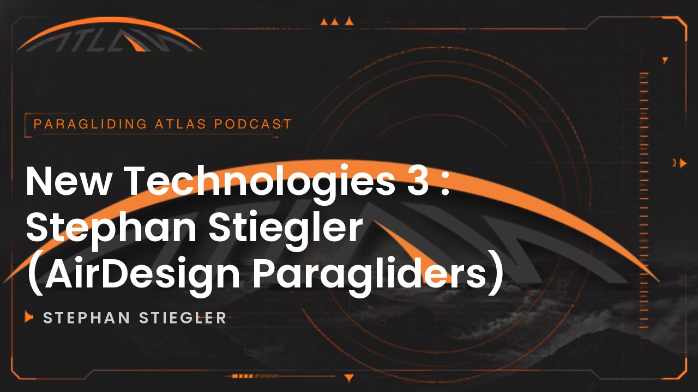

Is New Paragliding Technology Making Wings Safer?
Two-liners in the B class, harnesses that watch the wing, kites borrowed from the beach, and what the certification letter does and does not tell you, from the people who design them.
Seven conversations. The inventor of RAST on his own two-liner, Niviuk's R&D team, designers from AirDesign, UP and Supair, an acro pilot who builds harnesses, and the man who took a kite to the mountains.
The seven conversations
Open any tile for chapters, quotes and links New Technologies 1 : Beni Kälin (speedflyingschool.com)13 chapters
Episode 1482 min
New Technologies 1 : Beni Kälin (speedflyingschool.com)13 chapters
Episode 1482 min New Technologies 2 : Guillem Batlle & Adrià Grau (Niviuk Paragliders)13 chapters
Episode 1582 min
New Technologies 2 : Guillem Batlle & Adrià Grau (Niviuk Paragliders)13 chapters
Episode 1582 min
 New Technologies 4 : Veselin Ovcharov (Fly The Earth)11 chapters
Episode 2982 min
New Technologies 4 : Veselin Ovcharov (Fly The Earth)11 chapters
Episode 2982 min New Technologies 5 : Frantisek Pavlousek (UP Paragliders)11 chapters
Episode 4972 min
New Technologies 5 : Frantisek Pavlousek (UP Paragliders)11 chapters
Episode 4972 min Understanding Skymate: Paragliding Worlds First AI Driven Smart Harness System with Roman Barthelemy13 chapters
Episode 4478 min
Understanding Skymate: Paragliding Worlds First AI Driven Smart Harness System with Roman Barthelemy13 chapters
Episode 4478 min Why Paragliding’s Safety Future Looks Different: RAST Inventor Michael Nesler & the LeelooX Effect13 chapters
Why Paragliding’s Safety Future Looks Different: RAST Inventor Michael Nesler & the LeelooX Effect13 chapters
The letter rates the wing, not your flight
A certification test folds the wing along stickers and watches what it does. A real pilot reacts, and real turbulence loads every line at once. The letter is a fair comparison, not a forecast.
Read more
Frantisek Pavlousek has designed wings at UP for three decades and draws a clear line between safety according to certification and safety in real flight. They are linked but not the same: a low B can be as safe in the air as an A and miss the A on a single manoeuvre. The test is deliberately artificial. In the big asymmetric collapse the lab folds 50 percent of the trailing edge, plus or minus 2.5, along a line at 45 degrees to the open side, marked with stickers on the bottom surface, and the pilot releases the brake and does nothing. That is not what a trained pilot does, and the designer's easiest way to turn a C grade on that manoeuvre into a B is a slower trim speed.
Stephan Stiegler of AirDesign describes the same tension from the other side: a norm has to be identical every time, so the collapse must land in the marked field even when the wing would rather fold flatter or steeper. Pavlousek explains that this is what folding lines are for; on a two-liner the correct fold is often hard or impossible to pull from the risers. Stiegler's conclusion is that the manufacturer carries the duty to make a wing actually fly like its class, and that counting the Bs on two reports tells a buyer little. Read the designer's description of who the wing is for. Michael Nesler goes further: some companies treat the test as a marketing hurdle to be passed with tricks.
Certification and real safety are connected, but they are not the same thing. A low B can be as safe in the air as an A, and fail the A on just one manoeuvre.
Frantisek Pavlousek, UP Paragliders Episode 29, paraphrased
How a lab marks a wing for the big asymmetric collapse: half the trailing edge, a fold at 45 degrees, stickers to aim at, and a folding line to pull it there.
Fewer lines, because the profile got fatter
Thicker airfoils hold more air and more pressure, so they need fewer attachment points. The hard part is the long span between the two groups, and the nose ahead of the front one.
Read more
Michael Nesler invented RAST for Swing, and now builds his own two-liner, the LeelooX, certified in the B class. His explanation starts with the section. Forty years ago a paraglider profile was around 9 to 12 percent of the chord thick; today's are around 18. Paragliders fly slowly, so the thick section suits them, and the extra volume and pressure let a designer hang the wing on fewer points. The problem, even now, is the long unsupported stretch between the front and rear groups: push a wingover and the canopy squeezes there, the airfoil loses shape, and the wing loses lift. He sees it as a real problem on some of today's two-liners.
His answer is to move the double A points far back, which shortens that gap and leaves a longer, softer nose in front. When the nose is loaded it deforms and the wing pitches forward and accelerates by itself, which he argues makes a two-liner safer than a three-liner. He kept the old A attachment as a line that carries no load, for launching and manoeuvres, and reports a longer brake range and a softer stall, crediting the canopy rather than the line count. Niviuk's engineers put it more cautiously: two lines are about drag, safety has to be held or improved on every project, and whether an A school wing goes two-line is still open.
After Michael Nesler, Episode 44, chapter 3. Schematic, not a real wing.
The harness is the least developed thing you fly
The drop test is vertical, the reserve cable runs under your seat, and a slab of bed foam can pass. The designers trying to change that are working on protection, extraction and drag.
Read more
Veselin Ovcharov flies acro and builds harnesses, and his view is blunt: the sport has been flying rucksacks for decades. Certification is mostly about strength, webbing and stitching, plus a drop of a few metres onto the protector, and he says 12 centimetres of ordinary bed foam would pass it. He also points at the reserve: a skydiving rig routes the cable around the back so it pulls straight, while in a paraglider harness it runs under the seat and gets heavy under G. On Koroyd-type crumple protectors his advice is practical rather than technical: they suit good pilots who want protection for the rare hard crash; a beginner is better served by a classic protector that covers more scenarios.
Niviuk's Guillem Batlle and Adrià Grau explain why a protector can pass and still fail a pilot: the test drop is vertical, and if a real impact is not, pieces can rotate or slip out of place. They drop-tested their Origami protector at different orientations and angles, designed it to stay locked in its foam, and ran it through six consecutive high-energy drops across the EN and LTF sequences; a foam giving the same protection would need to be more than 60 percent thicker. Drag is the other axis. Supair's Roman Barthelemy measures a chair at about 23 newtons, a faired pod at about 12 and a submarine at about 8; in real flying the submarine gains about half a point of glide over a good pod.
After Roman Barthelemy, Episode 49, chapter 6. Drawings schematic.
A harness that knows the wing is spinning
Supair's Skymate reads the wing around a hundred times a second, is built to tell an autorotation from anything else, and can act when the pilot does not, with the same redundancy skydivers expect.
Read more
Roman Barthelemy designs harnesses at Supair and describes Skymate as an automatic activation device of the kind skydivers have used for years, rebuilt for a paraglider. A single sensor package in the wing, accelerometer, gyro, magnetometer and attitude, tracks exactly how the canopy is flying, around 100 readings a second during development. The system is tuned for one job first: separating an autorotation from everything else, which he says it now does very well. Because the dangerous sequence is a collapse that becomes a cravat and then a spin, it is already primed when it sees the collapse, before the pilot has recognised what is happening.
For now deployment mode is limited to autorotation, and perhaps later twists. It uses two separate systems to release the reserve, as in skydiving, and it sends a rescue alert over 3G or 4G the moment a collapse turns into a spin, while the pilot is still high enough to have signal. It only works with Supair wings, because the model has to know how a given wing behaves. He is deliberately using a basic detection model rather than headline AI, because the priority is electronics that are durable and repairable, and recorded flights will be replayed on a bench to find the corner cases.
Most new ideas were tried somewhere else first
A kite taken to the mountains became a new kind of soaring wing. Closed cells were tried on paragliders and dropped. Aerospace ideas only work after a redesign. Progress is rarely a straight line.
Read more
Beni Kälin runs a speed flying school in Switzerland and started flying race kites on the dunes, hooked to a paragliding harness, before taking them to the mountains. His 11 metre kite flew like a paraglider with the speed of a 6 or 7 metre speed wing, but it was still a kite: if it collapsed it might not reopen, so it was only safe as low as you were willing to fall. That experience fed the Moustache, built from a closed-cell prototype that had never been put on the market. On a ridge you choose your height with the toggles and can dive and convert the speed back into lift. It is more collapse-stable on full bar than any paraglider, he says, but it is marketed away from thermals, because it makes strong wind easy, and 50 km/h of wind carries four times the energy of 25.
Its SIV behaviour shows the trade. Collapses are hard to pull and the reaction is gentle, but a wing that folds while fully accelerated has little internal pressure, so hands-up it reopens slowly; a pump on the collapsed side brings it back. Closed cells and air valves were tried on paragliders long ago and abandoned as too dangerous, and Kälin thinks it is good that a paraglider can collapse. Niviuk's engineers add that an aerospace idea has to be redesigned before it helps a wing, and that ideas leave the market and return when the technology catches up. At AirDesign, Stiegler's Rise 4 stayed in production almost five years because prototype after prototype failed to beat it.
Worth remembering
Each one links to the chapter where it is saidThe collapse is aimed at stickers
Before a wing goes to the lab, markers are stuck to the bottom surface to show exactly where the big asymmetric collapse must fold, and folding lines are added to pull it there. Real turbulence hits all the lines together and folds more than any test can. Use the letter to compare wings under one rule, not to predict your own flight.
Frantisek Pavlousek What folding lines are actually forBuying
The letter is not the whole story
A low B can match an A in the air. Read the designer's description of who the wing is for, not a tally of grades.
Stephan Stiegler The proposal to abolish the categoriesYou are the weakest link
Safety and performance both follow the weakest point of the chain. A C wing flown by a B pilot gives neither.
Frantisek Pavlousek Can a buyer decide from a test report aloneLet a new model settle
Pavlousek's long-time flying friends buy a wing once it has been on the market for a year and people know how it behaves.
Frantisek Pavlousek A masterclass in paragliding fabricsWings
Thick profiles made two-liners possible
More volume and pressure means fewer attachment points. The weak spot is the long gap between groups.
Michael Nesler Two liners with double B attachmentsFrom mid B, fly actively
Stiegler's threshold: be ready to stop the pitch, then learn to feel it coming. Then you fly the wing, not the other way round.
Stephan Stiegler Moving from the glider to the pilot's abilityPump an accelerated collapse
A fully accelerated wing has little pressure inside and reopens slowly hands-up. Countersteer and pump the closed side.
Beni Kälin How an SIV differs under one of these wingsHarness
The drop test is vertical
Crashes are not. Ask whether a protector was tested at angles, and whether it stays in place.
Guillem Batlle & Adrià Grau Koroyd, and six high energy impactsCrumple protectors suit good pilots
For the rare hard crash, fine. A beginner gets more all-round protection from a classic protector.
Veselin Ovcharov More pluses than minusesElectronics that watch the wing
Skymate is built to spot a collapse turning into autorotation and send a rescue alert over 4G while you still have signal.
Roman Barthelemy Is autorotation the main thing it detectsQuestions these conversations answer
Each answer links to the chapter of the episode where the guest says it.
Does EN certification tell me how safe a paraglider is?
It tells you how the wing behaved in a fixed set of tests, which makes wings fair to compare. Frantisek Pavlousek of UP says certification safety and real safety are linked but not identical: a low B can be as safe in the air as an A that passed, and miss the A on one manoeuvre. Use the letter as a starting point, then read the manufacturer's description.
Frantisek Pavlousek Can performance run away from safety in a beginner wingWhy is the certification collapse done hands up?
Because a norm has to compare wings under one identical rule, and a pilot's reaction cannot be standardised. The test pilot pulls the A riser with no brake in hand and does nothing, which Pavlousek calls already outside reality, since a trained pilot reacts. It also explains a design trick: the easiest way to turn a C on the full-speed collapse into a B is a slower trim speed.
Frantisek Pavlousek Reading an EN C test report properlyWhat are folding lines on a paraglider for?
They exist to make the certification collapse land where the norm says it must. The big asymmetric fold is defined as 50 percent of the trailing edge, plus or minus 2.5, at 45 degrees to the open side, marked with stickers. On many wings, and especially two-liners, the pilot cannot pull that shape from the risers, so extra folding lines are fitted for the test.
Frantisek Pavlousek What folding lines are actually forIs a two-liner paraglider safe for a B pilot?
Michael Nesler, who invented RAST and now builds a B-class two-liner, argues a well-designed two-liner can be safer than a three-liner: with the double A points set far back, the nose deforms under load and the wing pitches forward and speeds up by itself. He even thinks a two-liner would make a good school wing. Niviuk's engineers are more cautious about the A class.
Michael Nesler How the stall point comparesWhy do modern paragliders need fewer lines?
Because the profile got thicker. Nesler says wings of forty years ago used sections around 9 to 12 percent of the chord; today's are around 18. A thick section suits the low speeds paragliders fly at, and the extra volume and pressure hold the shape between fewer attachment points. The remaining weakness is the long stretch between the front and rear groups, which can squeeze in manoeuvres.
Michael Nesler Two liners with double B attachmentsAre thin crumple protectors like Koroyd safe?
They can pass the vertical drop test and still move in a real crash. Niviuk's engineers explain that if the impact is not vertical, pieces can rotate or slip out of the foam, so they tested their Origami protector at several angles and designed it to lock in place. Veselin Ovcharov's advice: crumple protectors suit good pilots; beginners get broader protection from a classic protector.
Guillem Batlle & Adrià Grau and Veselin Ovcharov Koroyd, and six high energy impactsHow much glide does a submarine harness add?
Less than the computer suggests. Roman Barthelemy of Supair says simulations showed nearly a full point of glide over a faired pod, but in real flying it is about half a point. Measured drag tells the story: a chair harness is around 23 newtons, a pod with a fairing about 12, and a submarine about 8, so most of the gain comes from leaving the chair.
Roman Barthelemy Why so little R&D goes into harnessesWhat is the Supair Skymate smart harness?
An automatic activation system, inspired by skydiving, that watches the wing through a sensor package in the canopy. Roman Barthelemy says it is tuned to distinguish autorotation from everything else, is primed as soon as it sees a collapse, can release the reserve through two separate systems, and sends a rescue alert over 3G or 4G. For now it works only with Supair wings.
Roman Barthelemy Is autorotation the main thing it detectsCan I fly a paraglider harness with kite risers?
Beni Kälin did exactly that, clipping race kite risers to carabiners on a paragliding harness, and says it works surprisingly simply. But it is still a kite: if it collapses it may not reopen, so it is only reasonable at heights you would be willing to fall from. Higher than that, he says, it is definitely not safe. Purpose-built closed-cell soaring wings exist for a reason.
Beni Kälin Kite risers on a paragliding harnessWhy don't paragliders use closed cells like kites?
They were tried. Beni Kälin says closed cells and air valves that let air in but not out were tested on paragliders years ago and abandoned because they were too dangerous. A closed-cell wing may gain some stability, but he thinks it is good that a paraglider can collapse. Closed-cell soaring wings like the Moustache are marketed for ridge soaring, not thermals.
Beni Kälin Kites that inflate the leading edge